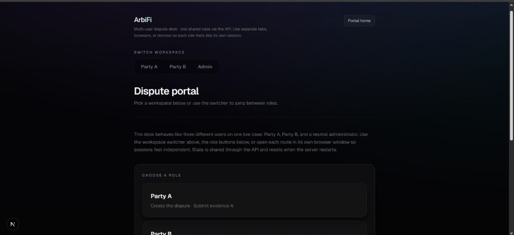

ArbiFi — AI Dispute Resolution on Solana
For freelance work, DAOs, and digital transactions, dispute resolution is often slow and depends on central authority. ArbiFi lets both parties present evidence; an AI analyzes the case and produces a clear, human-readable decision. Architecture secures final outcomes on-chain on Solana for transparency and trustless execution. Stack: Next.js and Tailwind CSS (frontend), TypeScript and Next.js API Routes (backend), Prisma and SQL (database).